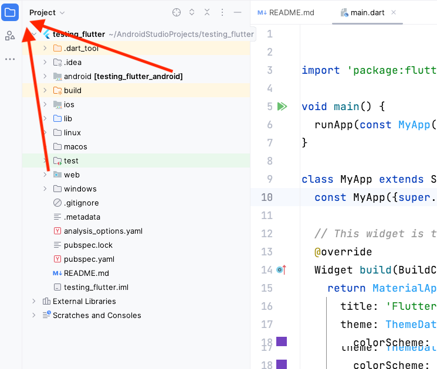
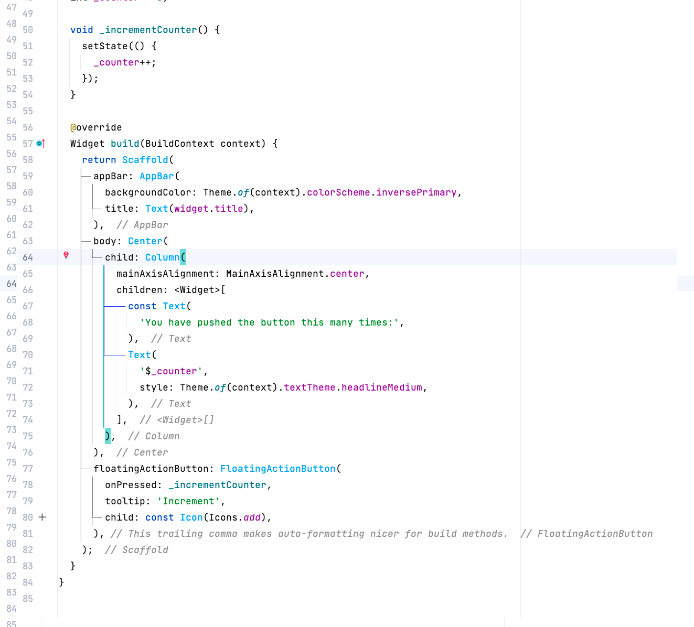

Android Studio is a programming environment for creating Android programs. It is really just a version of IntelliJ that has been modified to look different and has extra software for creating Android applications. Google has further extended Android Studio for creating Flutter applications through the Flutter plugin. You can not only write Android applications, but it also has software for launching Edge or Chrome and debugging through the browser.
There are several icons on the left side of AndroidStudio. The icon that looks like a file folder shows the Project panel. It has all of your files in the project. :

You can see there are folders for compiling the output of the different platforms (ios, linux, macos, web, android, windows).On the right side is the text editor. It should already have the file Main.dart open. If you look at the code, it should look very similar to Java. For now, I want you to delete all the comments since it's hard to see the actual code. Go ahead and delete any line that starts with //:

Make sure to delete all the comments before continuing on.